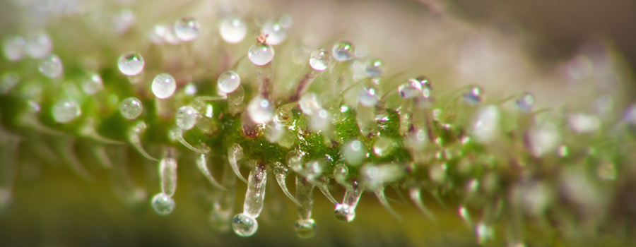

Trichomen is de glinsterende kleverige harsachtige coating, die de mooie cannabistoppen bedekt.
Tijdens de bloeiperiode zullen de kelken en de omringende suiker blaadjes bedekt worden met velden van kleine met paddenstoel bedekte stengels.
Deze koppen zullen van kleur veranderen van wit naar amber tijdens de bloei periode.
https://www.cnnbs.nl/alles-wat-je-wilde-weten-over-cannabis-trichomen/
Het woord trichoom is afgeleid van het Griekse woord �Tr�choma�, wat vertaalt naar "groei van haar".
Omdat dit microscopische haren zijn, moet je echt inzoomen op die ijzige deken van hars, waar eersteklas cannabis toppen mee bedekt zijn, om die velden met trichomen te kunnen zien.
Ze lijken op massa's stelen met kleine paddestoelenhoedjes.
Maar weet wel dat een grote hoeveelheid trichomen niet pers� garandeert dat de wiet "loud" is.
Merriam-Webster's woordenboek definieert een trichoom als "een draadvormige uitgroei; in het bijzonder: een epidermale haarstructuur op een plant".
Botanische vergelijking van trichomen met haar kan leiden tot verwarring met de stampers,
die overduidelijk met het blote oog zichtbaar zijn wanneer de haarachtige strengen uitsteken uit de bloemkelken bij bloeiende, vrouwelijke cannabisplanten.
Cannabis trichomen verdienen een meer specifieke, stoner-vriendelijke definitie, een uitleg van hun functies en het algemene belang.
We zullen proberen wat licht op de zaak te schijnen.
Naar onze mening is het verstandig trichomen te beschouwen als minuscule, biologische cannabino�den fabriekjes, die voornamelijk op de bloemen en suikerblaadjes van de cannabisplant worden gevonden.
Simpelweg zijn het de THC-rijke trichomen die je high maken en de CBD-rijke trichomen die het beste medicijn produceren.
Wetenschappers hebben drie categorie�n trichomen ge�dentificeerd die op cannabisplanten worden gevonden:
Bolvormige trichomen
Capitatum ongesteelde trichomen
Capitatum-gesteelde trichomen
Nummer drie, de capitatum-gesteelde trichomen, zijn interessant voor wiet liefhebbers omdat ze het grootste zijn.
Ze meten 50-100�m en produceren het olieachtige medicinale/recreatieve lekkers.

De trichomen is waar het allemaal om draait, omdat zij de mini cannabinoide fabriekjes zijn, die de cannabis toppen dat effect geven waar wij allemaal zo van houden.
Hashish en al jouw favoriete concentraten komen voort uit trichomen.
 Top of Page
Top of Page

 Top of Page
Top of Page